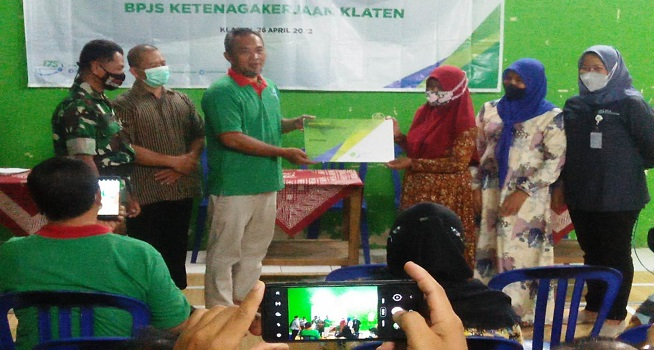
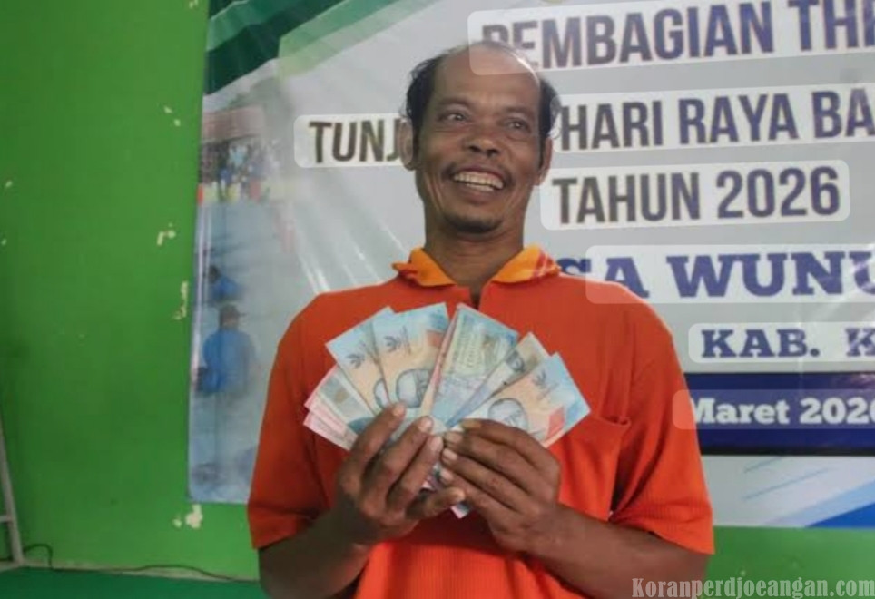
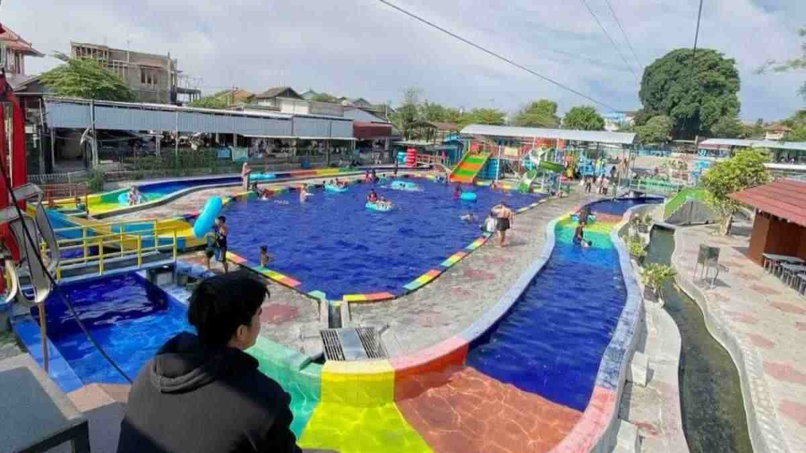
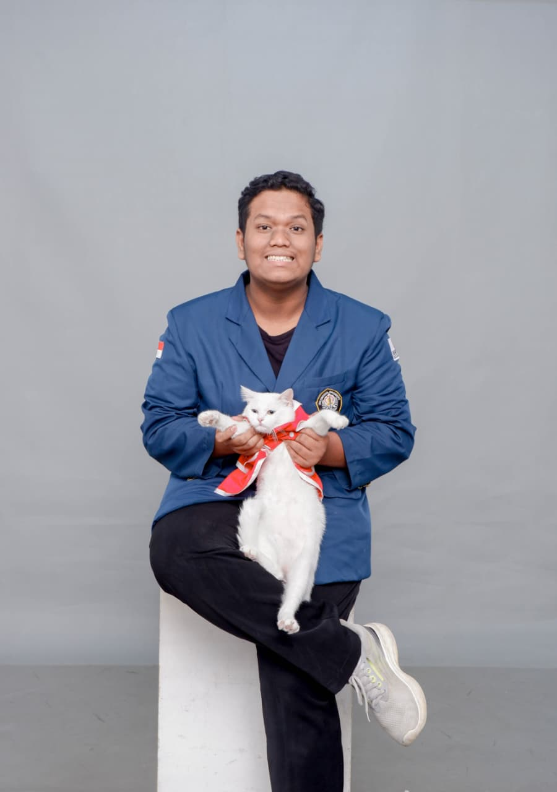
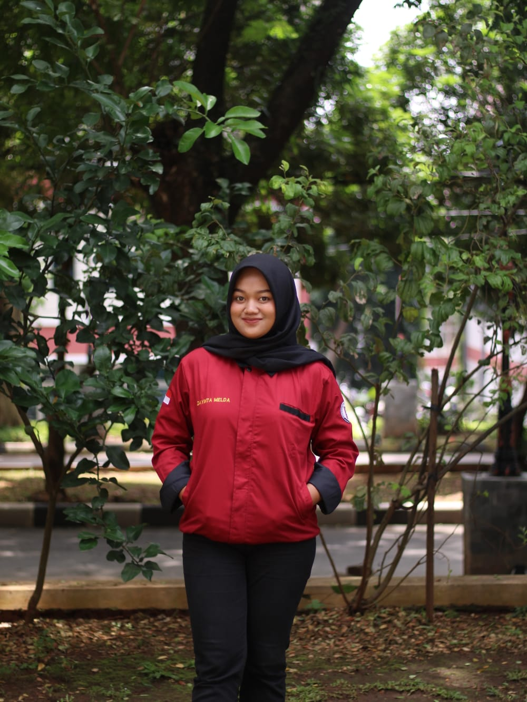
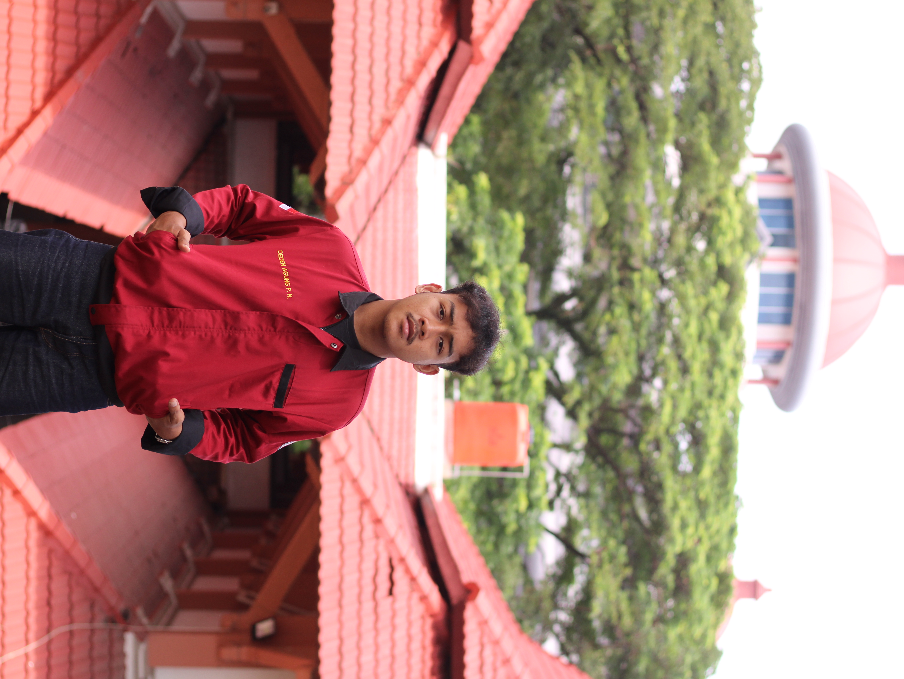
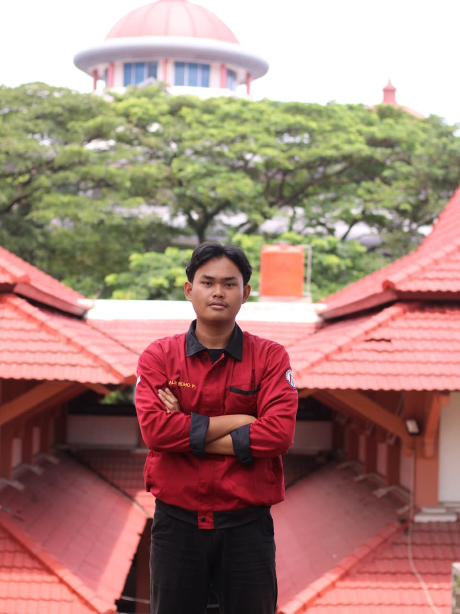
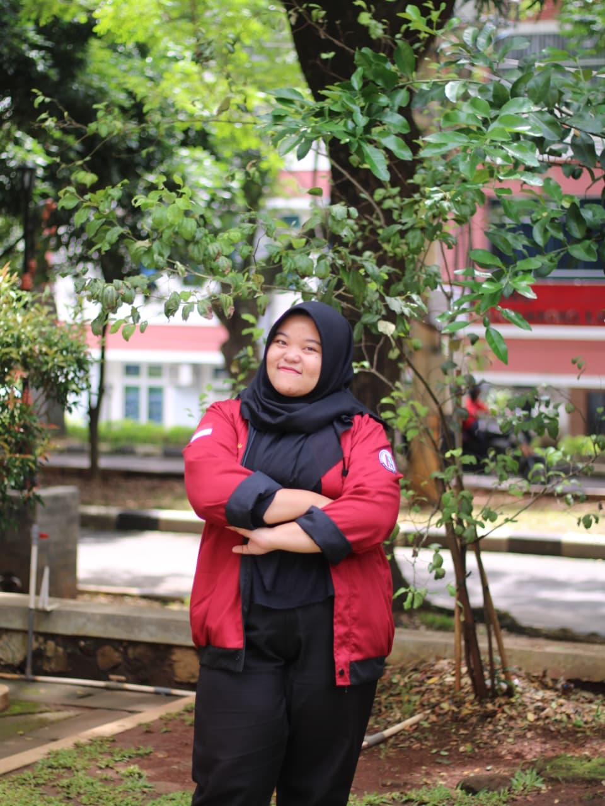
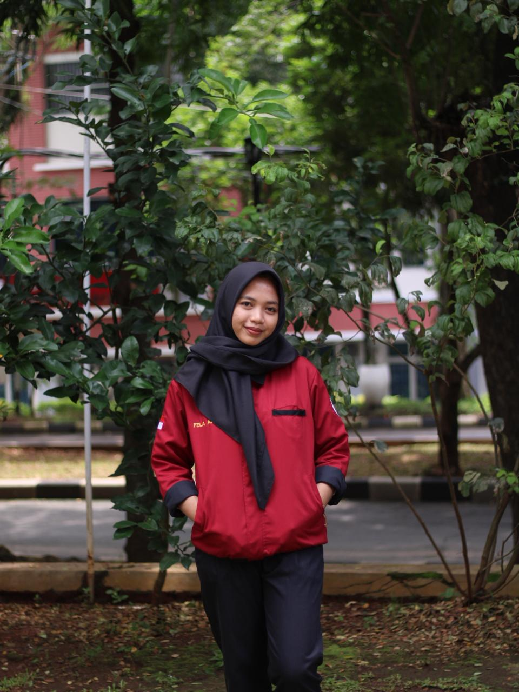

SIPET WUNUT
Tata Ruang & Potensi Wilayah
Desa Wunut
720
Luas Wilayah (Ha)
2.290
Total Penduduk
15
Titik Mata Air
Profil Desa Wunut
Letak dan Identitas Wilayah
Desa Wunut merupakan salah satu desa yang secara administratif terletak di Kecamatan Tulung, Kabupaten Klaten, Provinsi Jawa Tengah.
Lokasi desa ini sangat strategis karena berbatasan langsung dengan wilayah Kabupaten Boyolali di sisi barat, menjadikannya titik persinggungan aktivitas ekonomi dan mobilitas antar wilayah.
Sejarah Nama Wunut
Nama "Wunut" berasal dari kesepakatan penggabungan dua pemerintahan desa pada masa lampau, yakni pemerintahan Bekel (Wunut) dan Demang (Dukuh).
Karena jumlah penduduk yang masih sedikit dan tidak sebanding dengan luas wilayah, kedua pemerintahan tersebut sepakat untuk bersatu. Pemenangnya adalah pihak Dukuh — namun berdasarkan perjanjian, nama yang digunakan justru adalah "Wunut", dan nama itulah yang dipakai hingga sekarang.
Perkembangan Ekonomi Desa
Pada tahun 2016, Desa Wunut masih tergolong sebagai desa tertinggal dengan Pendapatan Asli Desa (PAD) yang hanya berkisar Rp30 juta hingga Rp50 juta per tahun.
Namun, melalui inovasi dan strategi yang tepat dalam memanfaatkan potensi sumber daya alam lokal, desa ini berhasil meningkatkan PAD secara drastis hingga mencapai Rp2,7 miliar pada tahun 2023.
Potensi Wisata BUMDes
Keberhasilan Desa Wunut tidak terlepas dari pengelolaan objek wisata Umbul Pelem yang dikelola oleh BUMDes Sumber Kamulyan. Fasilitas ini berhasil menarik 569.673 pengunjung sepanjang tahun 2022.
Sejak tahun 2016 hingga 2019, total dana desa yang dialokasikan untuk pengembangan wisata mencapai Rp1,6 miliar. Modal tersebut terbukti memberikan hasil yang signifikan untuk masa depan desa.
Program Kesejahteraan Warga
Kepala Desa Wunut menginisiasi berbagai program kesejahteraan, di antaranya pembagian Tunjangan Hari Raya (THR) serta jaminan BPJS Ketenagakerjaan dan Kesehatan untuk warga.
Pendapatan wisata juga dimanfaatkan untuk membayar premi BPJS bagi warga tidak mampu, santunan kematian, dan santunan warga miskin.
Status Desa Mandiri
Omzet BUMDes Sumber Kamulyan melonjak drastis: Rp30 juta (2018), Rp576 juta (2020), Rp915 juta (2022), hingga mencapai Rp3,1 miliar pada 2024.
Capaian tersebut menjadikan Desa Wunut resmi berstatus sebagai Desa Mandiri berdasarkan Indeks Desa Membangun (IDM) dari Kementerian Desa PDTT.
Data Statistik
Kelahiran & Kematian
Piramida Penduduk
Warta Desa Wunut

Wunut Jadi Desa Percontohan BPJS
Berhasil menjadi desa percontohan dengan jumlah kepesertaan BPJS Ketenagakerjaan terbanyak.
Baca Selengkapnya
Pemerintah Desa Bagikan THR Warga
Mengalokasikan dana ratusan juta rupiah dari BUMDes untuk Tunjangan Hari Raya secara merata.
Baca Selengkapnya
Umbul Pelem Raup Laba Miliaran
Pengelolaan kolam renang alami Umbul Pelem terbukti sukses memajukan ekonomi desa.
Baca SelengkapnyaGaleri Potensi


Tentang Kami
Sistem Informasi Peruntukan Tata Ruang (SIPET) Desa Wunut merupakan inovasi pelayanan publik berbasis digital dan sistem informasi geografis (WebGIS). Sistem ini dirancang untuk memetakan klasifikasi tata ruang dan informasi geospasial lainnya secara spesifik dan mendetail.
Tim Penyusun
Universitas Diponegoro
Maharani Quinn Qonita
40030623620004

Wahyu Sri Utomo
40030623620012

Dayinta Melda Alvia P.
40030623620022

Deden Agung P. N.
40030623650129

Galih Ridho Prasetyo
40030623650090

Destianing Sheila N.
40030623630077

Fela Azzahra
40030623650141